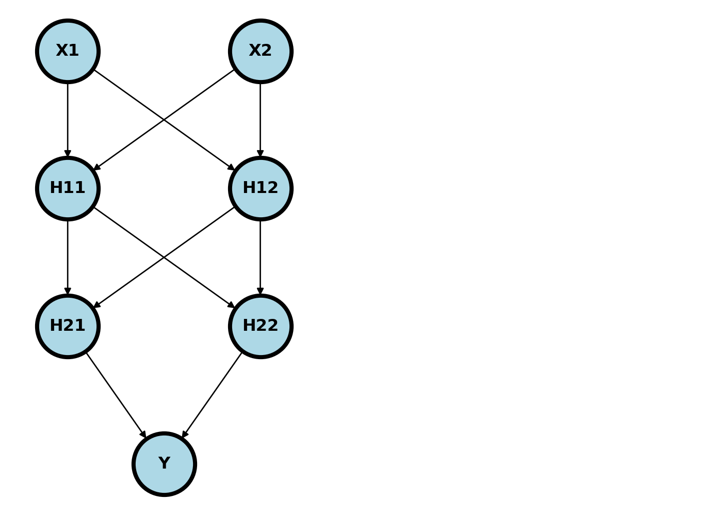
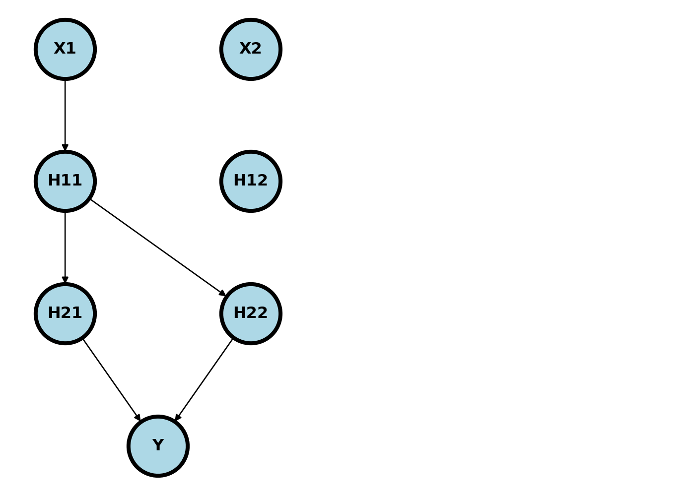

8 DIY ML/AI
We assume a background similar to that found in here. A neural network is a series of composed functions whereby parent nodes of the design graph are linearly combined via weights, then acted on by an activation function to obtain child nodes. Take the example below.
Usually, the nodes are added in so called layers. \((X_1, X_2)\) is the input layer, \((H_{11}, H_{12})\) is the first hidden layer, \((H_{21}, H_{22})\) is the second hidden layer and \(Y\) is the output layer. Imagine plugging an \(X_1\) and \(X_2\) into this network. It would feed forward through the network as
\[ \begin{align} H_{11} = & g_1(W_{011} + W_{111} X_1 + W_{211} X_2) \\ H_{12} = & g_1(W_{012} + W_{112} X_1 + W_{212} X_2) \\ H_{21} = & g_2(W_{021} + W_{121} H_{11} + W_{221} H_{12}) \\ H_{22} = & g_2(W_{022} + W_{122} H_{11} + W_{222} H_{12}) \\ \hat \eta = & g_3(W_{031} + W_{131} H_{21} + W_{231} H_{22}) \end{align} \]
where \(g_k\) are specified activation functions and \(\eta\) is our estimate of \(Y\). Typically, we would have a different activation function for the output layer than the others, and the other would have the same activation function. So, for example, if \(Y\) was binary, like hypertension diagnosis, then \(g_1=g_2\) and \(g_3\) would be a sigmoid.
A typical activation function is a rectified linear unit (RELU), defined as \(g(x) = x I(x > 0)\). The neural network is typically fit via a gradient based method, such as gradient descent, assuming a loss function. The loss function is usually based on maximum likelihood.
Let’s consider fitting the network above using gradient descent and obtaining the derivative via the chain rule. Consider the contribution of a row of data to a SE loss function, \({\cal L_i}(w) = (y_i - \eta_i)^2\), where \(\eta_i\) is the feed forward of our neural network for row \(i\). Let’s look at the derivative with respect to \(w_{111}\) where we drop the subscript \(i\). First note that only these arrows involve \(w_{111}\)

\[ \frac{\partial {\cal L} }{\partial w_{111}} = \frac{\partial {\cal L} }{\partial \eta} \frac{\partial \eta}{\partial H_{2}} \frac{\partial H_2 }{\partial H_{11}}\frac{\partial H_{11} }{\partial w_{111}} \]
where \(H_2 = (H_{21}, H_{22})^t\). These parts are:
\[ \begin{aligned} \frac{\partial {\cal L} }{\partial \eta} & = -2 (Y - \eta) \\ \frac{\partial \eta}{\partial H_{2}} & = g_3'(W_{031} + W_{131} H_{21} + W_{231} H_{22}) (W_{131}, W_{231}) \\ \frac{\partial H_2 }{\partial H_{11}} &= [g_2'(W_{021} + W_{121} H_{11} + W_{221} H_{12}) W_{121}, g_2'(W_{022} + W_{122} H_{11} + W_{222} H_{12}) W_{122}]^t\\ \frac{\partial H_{11} }{\partial w_{111}} &= g_1'(W_{011} + W_{111} X_1 + W_{211} X_2) x_1 \end{aligned} \]
These get multiplied together, using matrix multiplication when required, to form the first derivative for \(W_{111}\). This is repeated for all of the weight parameters. Notice this requires keeping track of which nodes have \(w_{111}\) in its parent chain and that it travels backwards through the network. For this reason, it is called backpropagation
Let’s try coding it for this parameter. We’re going to create the model just hard coding the network.
import numpy as np
## Define our activation function and its derivative
g = lambda x : np.exp(x) / (1 + np.exp(x))
g_deriv = lambda x: g(x) * (1 - g(x))
## Here's one row of data
Y, X1, X2 = 100, 2, 3
## Creating some random initialized weights
## Adding to the dims so that the notation agrees
W = np.random.normal( size = [3, 4, 3] )
H11 = g(W[0,1,1] + W[1,1,1] * X1 + W[2,1,1] * X2)
H12 = g(W[0,1,2] + W[1,1,2] * X1 + W[2,1,2] * X2)
H21 = g(W[0,2,1] + W[1,2,1] * H11 + W[2,2,1] * H12)
H22 = g(W[0,2,2] + W[1,2,2] * H11 + W[2,2,2] * H12)
ETA = g(W[0,3,1] + W[1,3,1] * H21 + W[2,3,1] * H22)
## Our chain rule sequence of derivatives
L = (Y - ETA) ** 2
## Backprop calculating the derivatives
dL_dETA = -2 * (Y - ETA)
dETA_dH2 = g_deriv(W[0,3,1] + W[1,3,1] * H21 + W[2,3,1] * H22) * np.array((W[1,3,1], W[2,3,1]))
dH2_dH11 = np.array(
( g_deriv(W[0,2,1] + W[1,2,1] * H11 + W[2,2,1] * H12 ) * W[1,2,1],
g_deriv(W[0,2,2] + W[1,2,2] * H11 + W[2,2,2] * H12 ) * W[1,2,2]
)
)
dH11_dW111 = g_deriv(W[0,1,1] + W[1,1,1] * X1 + W[2,1,1] * X2) * X1
## Here's the backrpop in derivative calculation
dL_dW111 = dL_dETA * np.sum(dETA_dH2 * dH2_dH11) * dH11_dW111
print(dL_dW111)
## Let's approximate the derivative numerically
e = 1e-6
## Perturb W111 a little bit
W[1,1,1] -= e
## Feed forward through the network with the perturbed W111
H11 = g(W[0,1,1] + W[1,1,1] * X1 + W[2,1,1] * X2)
H12 = g(W[0,1,2] + W[1,1,2] * X1 + W[2,1,2] * X2)
H21 = g(W[0,2,1] + W[1,2,1] * H11 + W[2,2,1] * H12)
H22 = g(W[0,2,2] + W[1,2,2] * H11 + W[2,2,2] * H12)
ETA = g(W[0,3,1] + W[1,3,1] * H21 + W[2,3,1] * H22)
## Calculate the new loss
Le = (Y - ETA) ** 2
## Here's the approximate derivative
print( (L - Le) / e )-0.11984719810783545
-0.1198459358420223Now let’s calculate the derivative